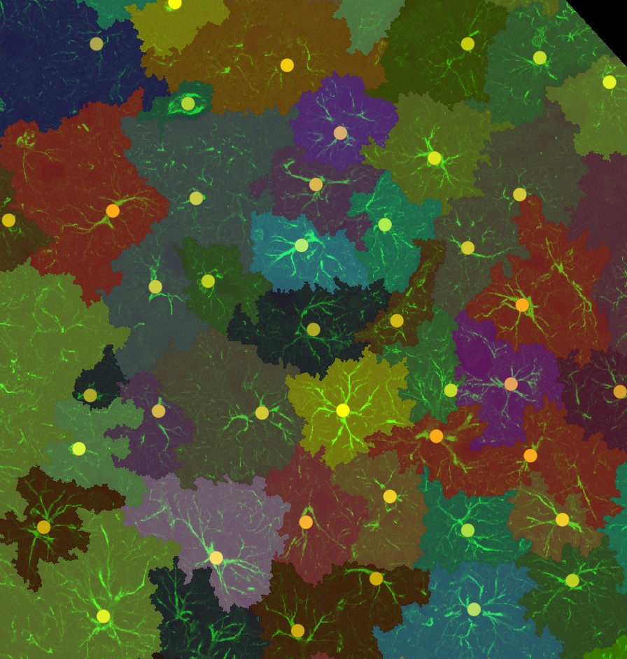
Every screenshot in this manual was taken from the real DOMINION dock running in napari, driven by manual\capture.py. The example image is a GFAP + DAPI immunofluorescence section at 0.29 µm per pixel.
From a TIFF to a per-cell table: install, open an image, click four Run buttons, export.
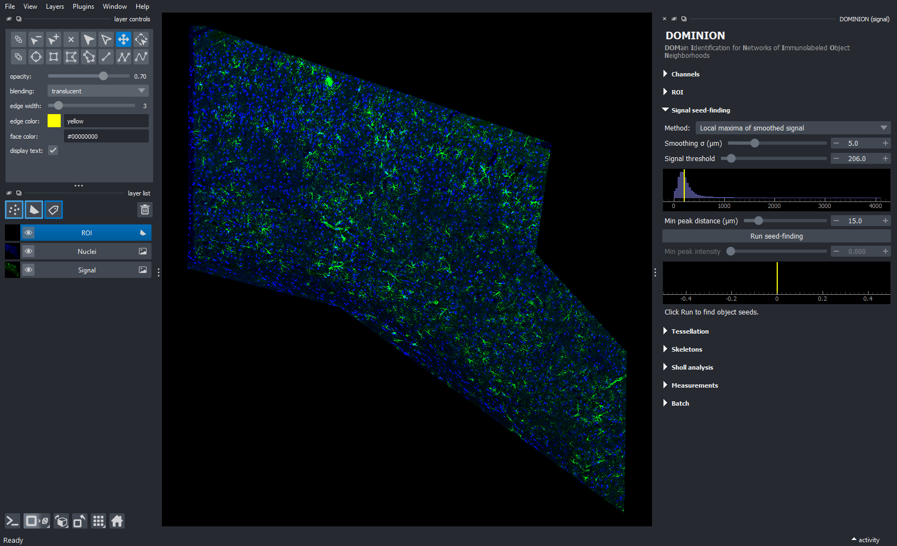
Two flavours, and two ways to get each. Most people want Basic, installed with the double-click installer.
Signal mode: seeds straight from the signal channel, tessellation, skeletons, Sholl, measurements. No GPU, no TensorFlow; runs on any modern PC. Python 3.11.
Basic plus nuclei mode (StarDist nuclei detection, --mode nuclei). Adds
TensorFlow 2.10, the last version with GPU support on native Windows, so Full is pinned to
Python 3.10. An NVIDIA GPU makes StarDist take seconds instead of minutes.
dominion, installs DOMINION into it, switches Qt to PyQt5, and puts a
DOMINION shortcut on the Desktop.To update a ZIP download, download the new ZIP and run the installer again. If you
cloned the repository with git instead, Update DOMINION.bat pulls the
latest code and reinstalls it in place (on a ZIP copy it can only reinstall the same version).
To switch between
Basic and Full, run the other installer: it replaces the dominion environment.
Launch DOMINION.bat does the same as the Desktop icon.
In PowerShell, from the extracted folder (the one containing pyproject.toml):
conda create -n dominion python=3.11 -y conda activate dominion pip install .
conda create -n dominion python=3.10 "tensorflow=2.10.0=gpu_py310*" -c defaults -y conda activate dominion pip install ".[nuclei]"
For a CPU-only Full install, use tensorflow=2.10.0 instead of the
gpu_py310* spec. If napari then fails with QtBindingsNotFoundError,
swap PyQt6 for PyQt5:
pip uninstall -y PyQt6 PyQt6-Qt6 PyQt6-sip pip install PyQt5
From the Desktop icon, or from a terminal in the dominion environment:
dominion # pick an image in a dialog (signal mode) dominion C:\path\to\image.tif # signal mode on a specific file dominion C:\path\to\image.tif --mode nuclei # nuclei mode (Full install only)
On a Basic install, --mode nuclei shows a message saying the Full version is
required, and exits.
Find one seed per object, then let the seeds divide the tissue between them, with the signal deciding where the borders fall.
Many cell populations tile tissue with little overlap. Astrocytes are the classic case: each owns a territory, and neighbouring territories barely interpenetrate. But no single immunolabel shows the whole territory. GFAP lights the soma and main processes and misses the fine peripheral processes that make up most of the cell's volume. Segmenting the signal directly therefore badly underestimates each cell's domain.
DOMINION instead assigns tissue to objects: every pixel goes to one seed, and the signal acts as boundary evidence rather than as the object itself. The result is a defensible approximation of each object's domain, from which you can count, measure intensities in any channel, describe morphology and study neighbours. The method is signal-agnostic: any channel that is bright at your objects and dim between them works.
Signal mode (the default) takes seeds straight from the signal channel: local maxima of the smoothed signal, or peaks of the distance transform of the thresholded signal. It has fewer parameters and a direct biological reading (one bright soma, one object) and works on single-channel images. Its weakness is objects with diffuse signal and no clear peak.
Nuclei mode (Full install) first finds every nucleus with StarDist, then scores each nucleus by how much signal surrounds it and keeps the ones above a threshold. Use it when the nucleus is a reliable anchor for your objects and you want each seed tied to a nucleus. It needs a 2-channel image.
Both modes feed the same tessellation, skeleton, Sholl and measurement steps.
The dock on the right is a column of collapsible sections. Click a section's title to open or close it. Top to bottom:
| Section | Does | Chapter |
|---|---|---|
| Channels | which channel is signal, which is nuclei | 4 |
| ROI | restrict the analysis to a drawn region | 4 |
| Signal seed-finding | signal mode only: seeds from signal peaks | 5 |
| Nuclei segmentation Object classification | nuclei mode only: StarDist nuclei, then keep those with enough surrounding signal | 6 |
| Tessellation | signal-guided seeded watershed: one domain per seed | 7 |
| Skeletons | per-domain skeleton rooted at the seed; branch metrics | 8 |
| Sholl analysis | ring-intersection profile per cell | 8 |
| Measurements | per-domain shape and intensity; CSV export | 9 |
| Batch | save and load all slider values as JSON | 10 |
Every slider is a slider plus a number box; type an exact value in the box if you prefer. Some sliders sit on a histogram of the data they act on, with a yellow line at the current value, so you can see what you are cutting. Hover over any control for a short explanation.
Most surprising results trace back to the input: the pixel size, the tissue mask, or the wrong channel as signal.
| File | How it is used | Modes |
|---|---|---|
| 2D single-channel TIFF | the signal channel | signal |
| 2-channel CYX TIFF | channel 0 = signal, channel 1 = nuclei | both |
| N-channel CYX TIFF | as above; channels 2 and up are kept as extra channels and measured per domain | both |
Z-stacks are not supported: make a single plane or a projection first. Remember that a 2D domain is a cross-section through a 3D territory.
Every distance and area in DOMINION is in microns. The pixel size is read from the TIFF's resolution tags (the ImageJ convention: unit µm, XResolution in pixels per µm). Fiji writes these when you set Image ▸ Properties and save as TIFF. If they are missing, DOMINION warns and uses 1.0 µm/px: you can still tune, but slider values in µm and all exported areas and lengths will be wrong.
DOMINION treats every non-zero pixel as tissue. Domains never extend into zero pixels. If your image has background around the section, set it to exactly 0 before loading (for example in Fiji: threshold or draw the section outline, then Edit ▸ Clear Outside). The example image's black margins are such zeros.
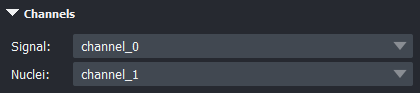
Signal channel is the immunolabel that defines your objects (GFAP, for example). It drives seed-finding, tessellation, skeletons and Sholl.
Nuclei channel is the nuclear stain (DAPI) used by nuclei mode; leave it unset for signal-only work.
Changing either acts like loading a new image: all results are cleared and the sliders that depend on the data (thresholds and their histograms) are reset.
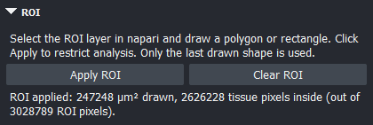
Only the last shape drawn counts. Clear ROI returns to the whole tissue. Applying or clearing an ROI clears all results and resets the data-driven sliders, so load your saved settings again afterwards (chapter 10). ROIs are not saved with settings.
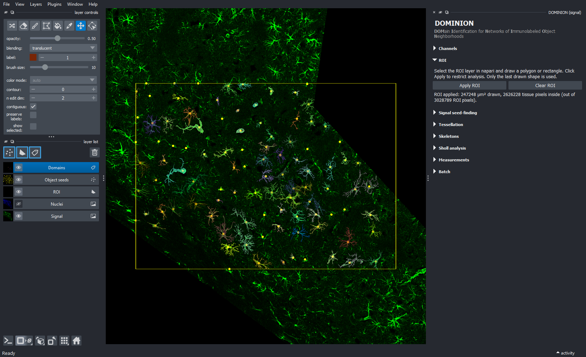
One seed per object, placed at the brightest point of each object's signal. Every domain you get later comes from one of these dots.
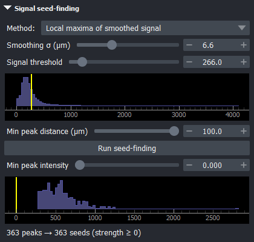
Local maxima of smoothed signal (default): blur the signal, then take local maxima at least Min peak distance apart. Each seed's strength is its smoothed intensity. Best for cells with a bright soma.
Distance-transform peaks of thresholded signal: threshold the signal, compute each pixel's distance to the nearest background pixel, and take the peaks of that. Strength is the depth in pixels. Better at splitting touching blobs and at cells with diffuse signal but a solid body.
After a Run, Min peak intensity (or Min peak depth) drops weak seeds instantly, without re-running. Its histogram usually shows a low-strength shoulder of background peaks; put the line just past it.
| Control | Range · default | What it does |
|---|---|---|
| Smoothing σ (µm) | 0–20 · 5.0 | Gaussian blur before peak detection. Larger merges nearby peaks: too small and one cell's processes become several seeds; too large and neighbouring cells merge. Start near a third of the soma diameter. |
| Signal threshold | 0–99.5th pct · median | Pixels below it are ignored. Defaults to the median non-zero signal in the tissue. Raise it to keep seeds off dim background. |
| Min peak distance (µm) | 1–100 · 15 | Two seeds can be no closer than this. Set it to a little under the typical spacing between neighbouring somata. |
| Min peak intensity / depth | live · 0 | Discard seeds weaker than this. Live: no Run needed. |
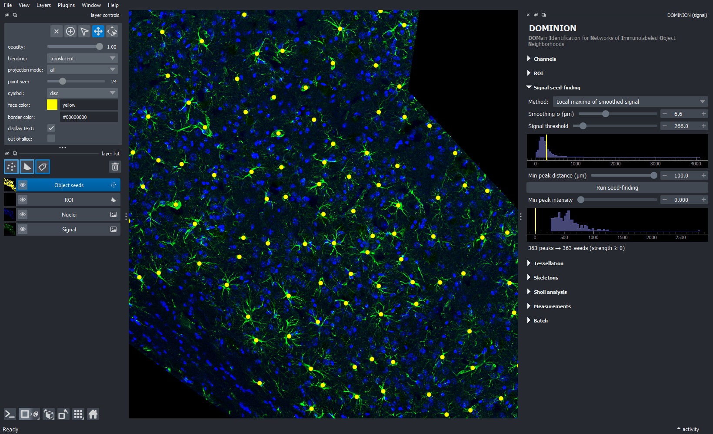
Find every nucleus, then keep only the nuclei that sit inside your
objects' signal. Start with dominion image.tif --mode nuclei.
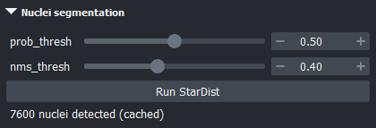
Run StarDist runs the pretrained 2D_versatile_fluo model on
the nuclei channel (normalised to its 1st–99.8th percentiles, tiled automatically for large
images). Results appear as Nuclei (mask) and Nuclei (centroids) layers.
The result is cached next to the image (image.dominion_cache_<hash>\), keyed on the image and both thresholds, so re-running with the same settings is instant. Changing the image file invalidates the cache.
| Control | Range · default | What it does |
|---|---|---|
| prob_thresh | 0–1 · 0.50 | Object-probability threshold. Higher keeps only confident nuclei; lower finds faint ones and more false positives. |
| nms_thresh | 0–1 · 0.40 | Overlap allowed between neighbouring detections. Raise it in crowded tissue where real nuclei touch. |
Each nucleus i gets an object-likeness score from the signal around it:
scorei = ∑p [ α·signal(p) + (1−α)·(R − dist(p, ci)) ]
summed over tissue pixels p within radius R of the centroid ci whose signal is at least T. Nuclei scoring at least θ become seeds (yellow); the rest stay grey.
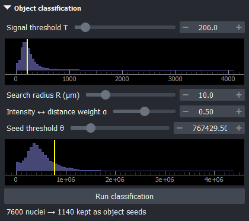
| Control | What it does |
|---|---|
| Signal threshold T | Signal a pixel needs to count toward a score. Default: median non-zero signal. Needs Run. |
| Search radius R (µm) | Disc around each nucleus that is scored. About the soma radius plus a little. 1–50, default 10. Needs Run. |
| Weight α | 1 = intensity only; 0 = proximity only (counts bright pixels, nearer ones worth more). Default 0.5. Needs Run. |
| Seed threshold θ | Keep nuclei scoring at least θ. Live. Default: median score. |
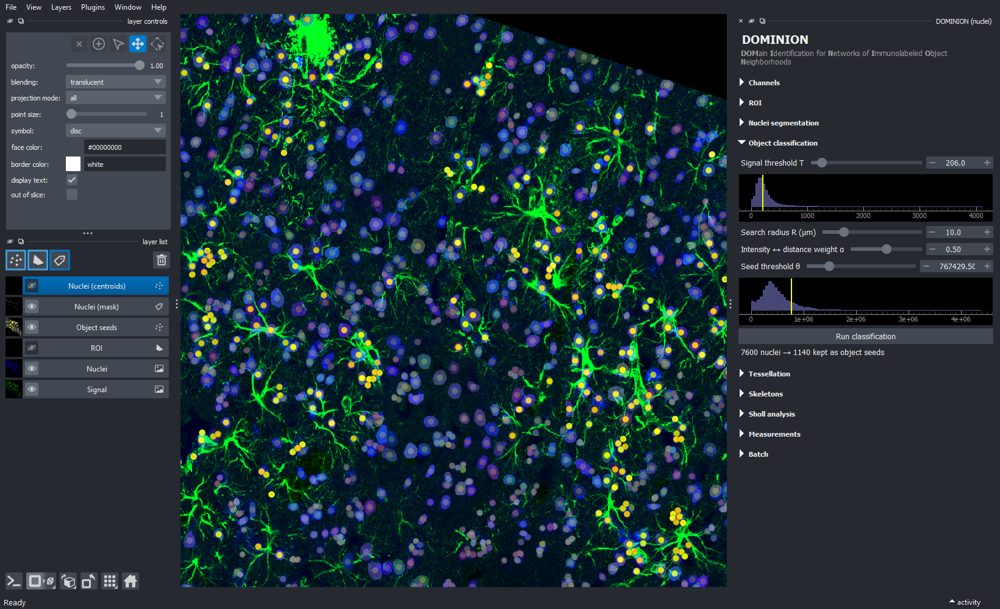
Each seed floods outward over the tissue until it meets its neighbours. The signal decides where they meet.
DOMINION runs a seeded watershed from the seeds over an elevation map that blends two things: the inverted, smoothed signal (bright = low = easy to flood) and the distance from the nearest seed. Signal influence sets the blend:
elevation = s·(1 − signal) + (1 − s)·distance (both normalised to 0–1)
The result is the Domains labels layer, one colour per object, and the count under the Run button.
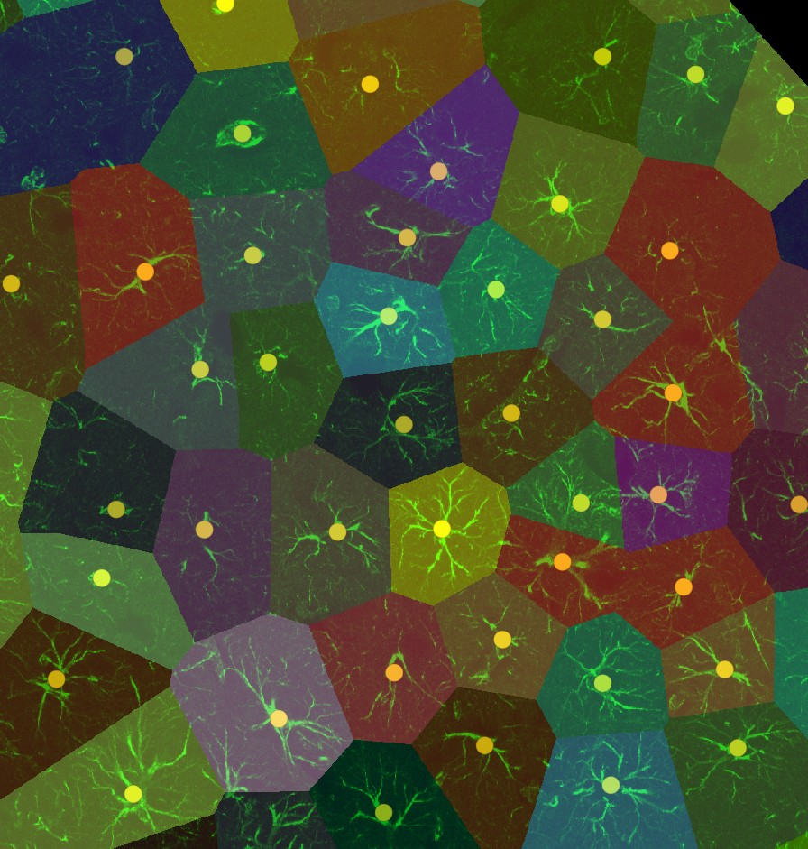
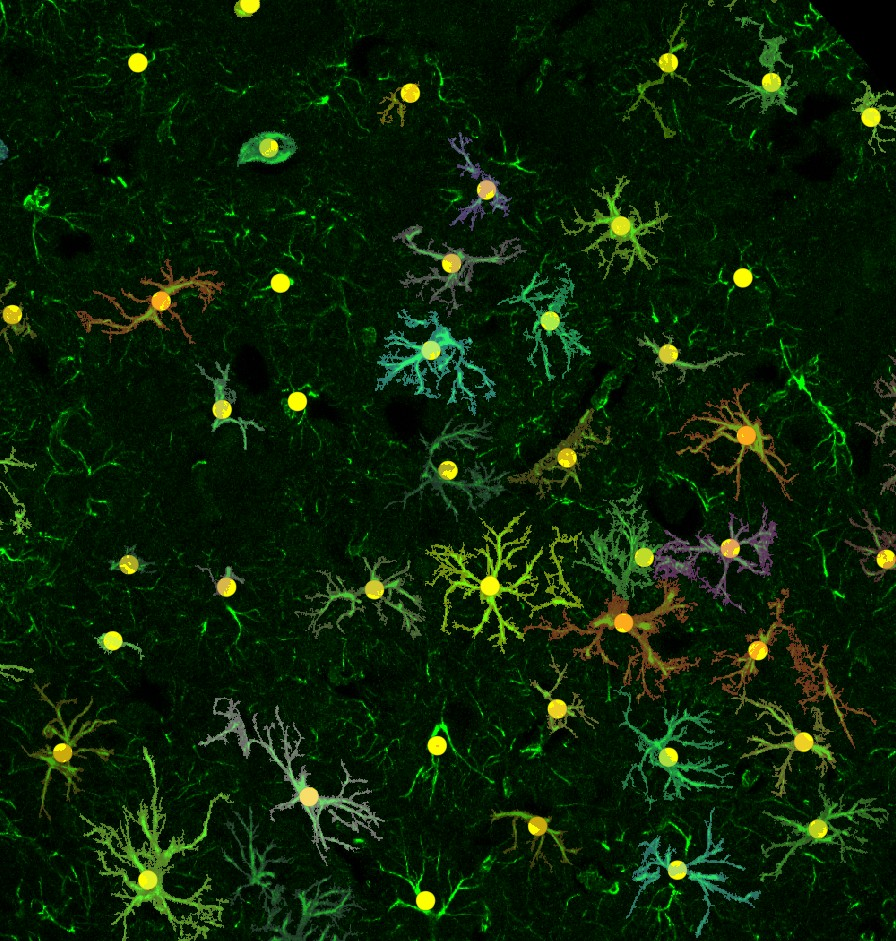
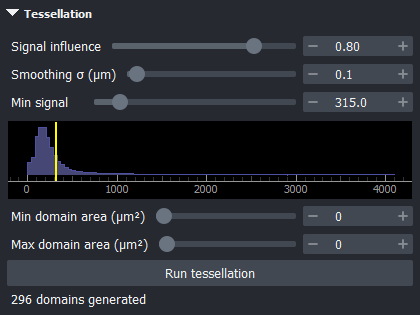
The first two panels above answer “which tissue belongs to which cell”: use them for territory size, density and neighbour analysis, and for intensities of other markers within each territory. The third answers “what does each labelled cell look like”: use it for skeletons, Sholl and signal-shape measures. Many projects run both and save each as its own settings file.
| Control | Range · default | What it does |
|---|---|---|
| Signal influence | 0–1 · 0.5 | 0 = distance only (Voronoi-like); 1 = follow the signal only. 0.6–0.9 suits most stains. |
| Smoothing σ (µm) | 0–10 · 2.0 | Blur of the signal that guides the watershed (and that Min signal is compared against). Larger: smoother borders that follow overall shape. Small: borders follow fine processes. |
| Min signal | histogram · 0 (off) | Pixels whose smoothed signal is below this are excluded from every domain: background, gaps, vessels. |
| Min domain area (µm²) | 0–5000 · 0 (off) | Domains smaller than this lose their seed and are re-flooded by their neighbours instead of surviving as slivers. Repeats up to five times. |
| Max domain area (µm²) | 0–100 000 · 0 (off) | Each domain is trimmed to this area, keeping the pixels nearest its seed. Useful at tissue edges where a lone seed would otherwise claim a huge region. |
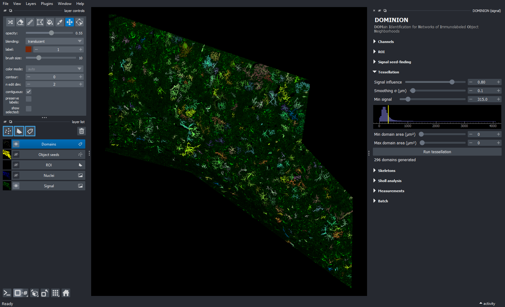
domain_id in the CSV.Because each cell already has its own domain, tracing it is simple: skeletonize inside the domain, root the tree at the seed, count.
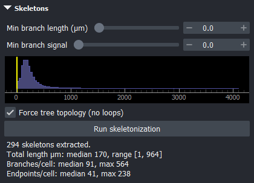
Run skeletonization thins each domain to a one-pixel-wide skeleton
(scikit-image), keeps its largest connected piece, roots it at the seed, and decomposes it into
branches with skan. The Skeletons layer shows the result in each domain's
colour.
Skeletons follow the domain mask, so they describe the cell only if the domains were carved with Min signal (chapter 7). On uncarved territories the skeleton traces the territory's shape instead.
| Control | Range · default | What it does |
|---|---|---|
| Min branch length (µm) | 0–20 · 0 (off) | Prunes end twigs shorter than this… |
| Min branch signal | histogram · 0 (off) | …and end twigs whose mean signal is below this. A twig is pruned only if it fails every test that is switched on: a short twig survives if bright, a dim one if long. Pruning repeats until nothing changes. |
| Force tree topology | on | Breaks loops in the skeleton (common where processes cross), keeping the brightest paths and cutting the dimmest one in each loop, so every cell is a tree and branch counts are well defined. |
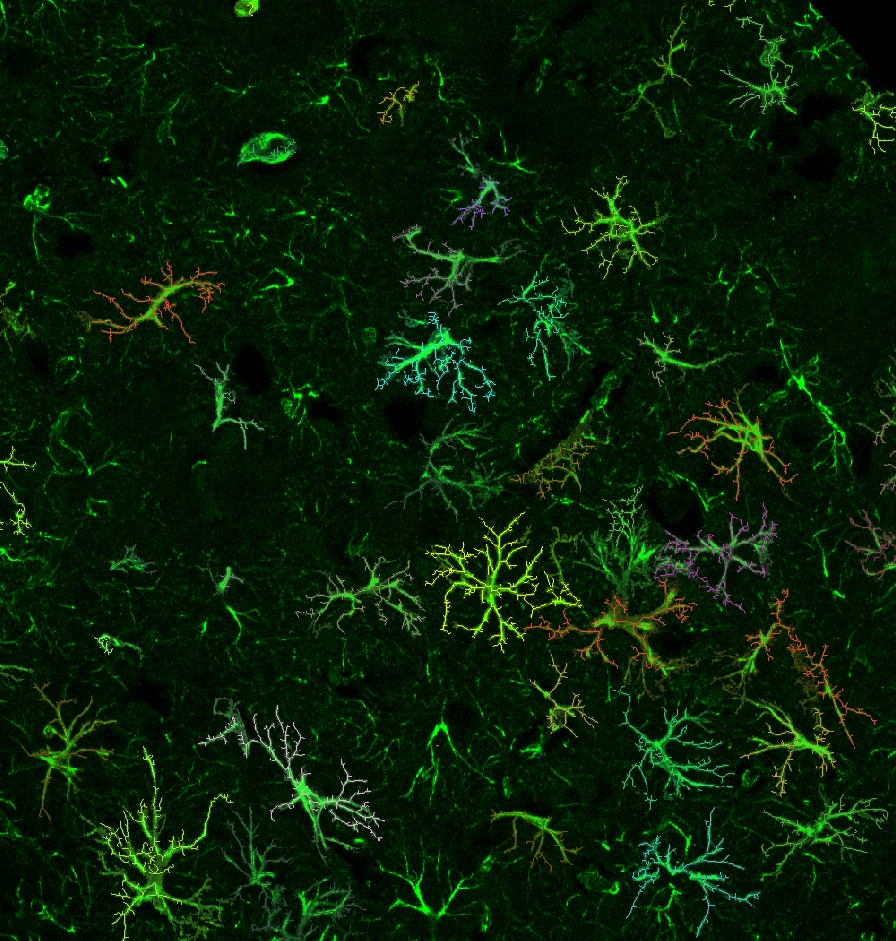
Sholl analysis counts how many times a cell's arbor crosses concentric circles centred on the soma. DOMINION counts branches, not pixels: within each annulus, each connected piece of skeleton is one intersection, so a long radial branch counts once per ring.
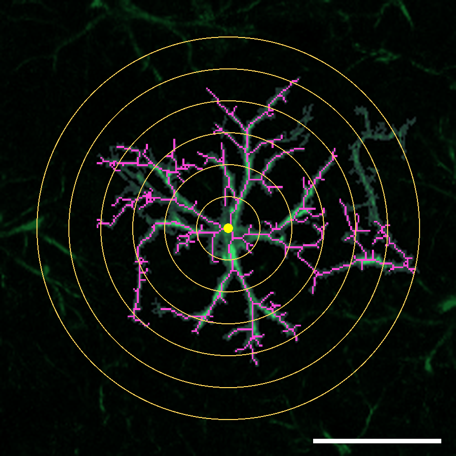
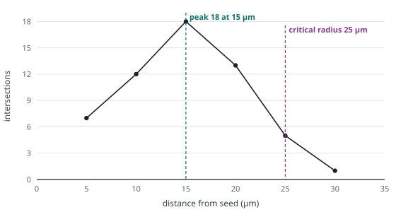
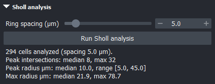
Ring spacing (µm) (0.5–50, default 5) sets the distance between rings. Finer spacing gives a smoother profile but each ring counts fewer pixels; 2–5 µm suits astrocytes at typical confocal resolution.
The summary under the button gives medians across cells; the per-cell numbers go into the CSV.
| Metric | Meaning |
|---|---|
| peak_intersections | most crossings at any ring: how bushy the arbor is at its widest |
| peak_radius_um | the radius where that peak occurs |
| max_radius_um | distance from the seed to the farthest skeleton pixel: the arbor's reach |
| critical_radius_um | first radius beyond the peak where crossings fall to half the peak or fewer |
| auc | sum of crossings over all rings, a proxy for total branch length |
| ramification_index | peak crossings ÷ crossings at the first ring: how much the arbor branches out from the primary processes |
One row per domain, every channel measured inside it, plus skeleton and Sholl columns if you ran them.
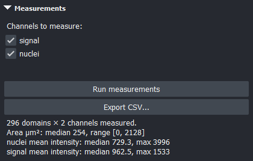
Tick the channels to measure (signal, nuclei and any extra channels) and click Run measurements. The summary shows the domain count and median area and intensity.
Export CSV... asks where to save, defaulting to the image's folder, and writes two files:
metric,value row per
image-level number, including every parameter used, so the file documents how it was made.Run Skeletons and Sholl before exporting to get their columns; otherwise those cells are left empty.
| Columns | Meaning |
|---|---|
| domain_id | the domain's label in the Domains layer |
| area_um2 | domain area |
| centroid_y_px, centroid_x_px | domain centroid, in pixels (multiply by the pixel size for µm) |
| eccentricity, solidity | shape: 0 = circle … 1 = line; area ÷ convex-hull area |
| perimeter_um, equivalent_diameter_um | outline length; diameter of a circle of the same area |
| axis_major_um, axis_minor_um | axes of the best-fit ellipse |
| <channel>_mean, _median, _sum, _min, _max, _std | intensity statistics of each measured channel inside the domain (signal_, nuclei_, channel_2_…) |
| skel_total_length_um, skel_n_branches, skel_n_endpoints, skel_n_branchpoints | from Skeletons |
| sholl_* | the six Sholl metrics (chapter 8) |
Image size and pixel size; tissue area; n_domains and
domain_density_per_mm2; domain area mean, median, SD, quartiles, min and max; median
and mean of each channel's per-domain mean intensity; medians of the skeleton and Sholl metrics;
then every parameter, prefixed by its stage (seeds__sigma_um,
tessellation__min_signal, …).
| Question | Where the answer is |
|---|---|
| How many objects? | n_domains, or domain_density_per_mm2 to compare
sections of different sizes. For counts per region, draw an ROI per region and export each. |
| How much of marker X per cell? | Load a multi-channel TIFF, tick X in Measurements,
use X_mean (concentration) or X_sum (total amount) per domain. |
| How big, how branched? | area_um2 (territory), skeleton and Sholl columns (arbor). |
| Who neighbours whom? | Not computed in the app yet. Use the centroids, as below. |
Nearest-neighbour distances from the exported centroids (Python with pandas and SciPy, both
already in the dominion environment):
import pandas as pd from scipy.spatial import cKDTree df = pd.read_csv(r"C:\path\to\image_domains.csv") px = 0.2857 # µm per pixel: pixel_size_um in the summary CSV xy = df[["centroid_x_px", "centroid_y_px"]].to_numpy() * px d, _ = cKDTree(xy).query(xy, k=2) # k=2: the nearest point is the cell itself df["nn_distance_um"] = d[:, 1]
For true neighbour relationships (which domains share a border), use the Domains layer: in
napari's console, viewer.layers["Domains"].data is the label image, and pixels where two
different labels touch are the shared borders.
Tune once, then apply the same parameters to every image in the experiment.
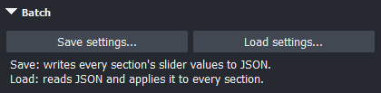
Save settings... writes every section's controls (method, sliders, check boxes, the measured channels) to a JSON file, by default image_settings.json next to the image.
Load settings... reads one back and sets every control. It does not run anything: click each Run button in turn, top to bottom.
A settings file is plain JSON that you can read, keep with your data, or cite in a methods section:
{ "sections": {
"signal_seed_finding": { "method": "Local maxima of smoothed signal", "sigma_um": 6.6,
"signal_threshold": 266.0, "min_distance_um": 15.0, "peak_strength": 338.8 },
"tessellation": { "signal_influence": 0.8, "smoothing_sigma_um": 0.1, "min_signal": 315.0,
"min_area_um2": 0.0, "max_area_um2": 0.0 },
"skeletons": { "min_branch_length_um": 0.0, "min_branch_signal": 0.0, "force_tree": true },
"sholl_analysis": { "ring_spacing_um": 5.0 },
"measurements": { "channels_checked": ["signal", "nuclei"] } } }
These are the settings behind the screenshots in this manual. The thresholds are raw intensity values, so they carry over only between images acquired and exported the same way. Keep a settings file per staining batch.
pandas.concat), adding a column for the image name.Tune from upstream to downstream, judge each stage by eye before moving on, and change one thing at a time.
| Parameter | Start at | Why |
|---|---|---|
| Seed σ | ⅓ soma diameter | Smooths processes away so each soma gives one peak. |
| Min peak distance | 0.6–0.8 × cell spacing | Astrocyte somata are rarely closer than ~15 µm. |
| Signal influence | 0.8 | Strong enough to bend borders around processes, not so strong that bright vessels capture territory. |
| Min signal (carving) | just above the background peak | The histogram's tall left peak is background; the long tail is cells. |
| Sholl spacing | 2–5 µm | Several rings per process segment without counting pixel noise. |
Grouped by when it happens.
QtBindingsNotFoundError or a Qt DLL error.pip lines in chapter 2.Live = takes effect at once. Run = takes effect on the section's next Run.
| Section · control | Range · default | When | Effect |
|---|---|---|---|
| Channels · Signal / Nuclei | channel 0 / 1 | at once | Which channel defines objects / nuclei. Clears all results. |
| ROI · Apply / Clear | whole tissue | at once | Restrict to the last drawn shape. Clears all results. |
| Seeds · Method | local maxima | Run | Local maxima of smoothed signal, or distance-transform peaks. |
| Seeds · Smoothing σ | 0–20 µm · 5 | Run | Blur before peak finding. |
| Seeds · Signal threshold | data · median | Run | Ignore pixels below. |
| Seeds · Min peak distance | 1–100 µm · 15 | Run | Minimum seed spacing. |
| Seeds · Min peak intensity/depth | data · 0 | live | Drop weak seeds. |
| Nuclei · prob_thresh | 0–1 · 0.50 | Run | StarDist detection confidence. |
| Nuclei · nms_thresh | 0–1 · 0.40 | Run | StarDist overlap allowed. |
| Classify · T | data · median | Run | Signal a pixel needs to count toward a score. |
| Classify · R | 1–50 µm · 10 | Run | Scoring radius around each nucleus. |
| Classify · α | 0–1 · 0.50 | Run | Intensity (1) vs proximity (0) weighting. |
| Classify · θ | data · median | live | Keep nuclei scoring at least θ. |
| Tessellation · Signal influence | 0–1 · 0.5 | Run | Signal vs distance in the watershed. |
| Tessellation · Smoothing σ | 0–10 µm · 2 | Run | Blur of the guiding signal. |
| Tessellation · Min signal | data · 0 (off) | Run | Exclude dim pixels: carve domains to the cell. |
| Tessellation · Min domain area | 0–5000 µm² · 0 | Run | Absorb small domains into neighbours. |
| Tessellation · Max domain area | 0–100k µm² · 0 | Run | Trim domains to the pixels nearest their seed. |
| Skeletons · Min branch length | 0–20 µm · 0 | Run | Prune short end twigs (if also dim). |
| Skeletons · Min branch signal | data · 0 | Run | Prune dim end twigs (if also short). |
| Skeletons · Force tree | on | Run | Cut the dimmest path in each loop. |
| Sholl · Ring spacing | 0.5–50 µm · 5 | Run | Distance between rings. |
| Measurements · channels | all ticked | Run | Which channels get intensity columns. |